People
John M. Cottle
Professor of Geology, Department of Earth Science and Earth Research Institute
Faculty Director, UCSB Natural Reserve System
University of California, Santa Barbara, CA 93106-9630
Tel: (805) 893-7315 · cottle@geol.ucsb.edu
D.Phil., University of Oxford, 2008
M.Sc., University of Otago, 2002
B.Sc., University of Otago, 2000
We are always looking for people to join our group. If any of the projects on the Research page interest you, get in touch.
Current group members

Ph.D., Himalayan Tectonics

Ph.D., Basin and Range Tectonics

Ph.D., Ocean Island Geochronology

M.Sc., Rare Earth Element Mineralization in Nevada
Past group members
Postdoctoral scholars
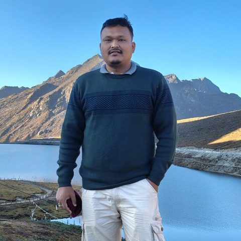
Fulbright Postdoctoral Scholar
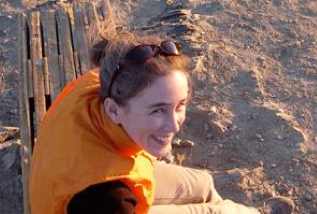
Postdoctoral Scholar
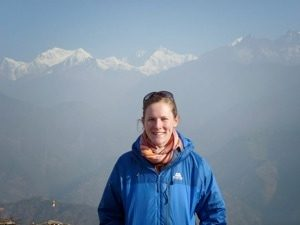
Fulbright Postdoctoral Scholar, 2014 to 2015
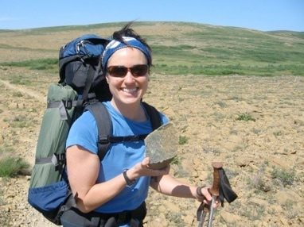
Postdoctoral Scholar
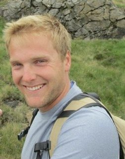
Ph.D. student and postdoctoral fellow
Ph.D. students
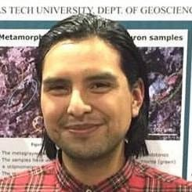
Thermochronology of the lower crust
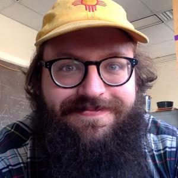
Geochronology of metamorphic rocks from the Himalaya
Alex passed away in 2021 and was awarded a posthumous Ph.D. Tributes: fundraiser page and Daily Nexus.
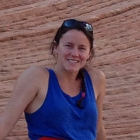
Geochronology of granitoids from Northern Victoria Land, Antarctica
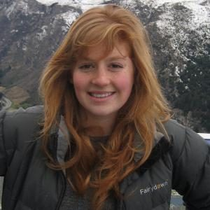
Magmatic and metamorphic evolution of the Southern Alps, New Zealand
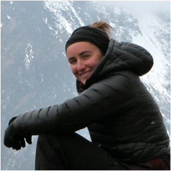
Structural and thermochronologic evolution of the Main Central Thrust, Nepal
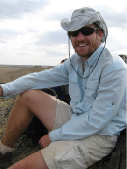
2015, Magmatic evolution of the southern Victoria Land segment of the Ross Orogen, from U-Pb and Hf isotopes
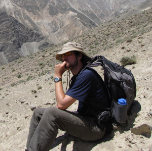
2015, Petrochronology of crustal anatexis in the Leo Pargil Dome, NW India
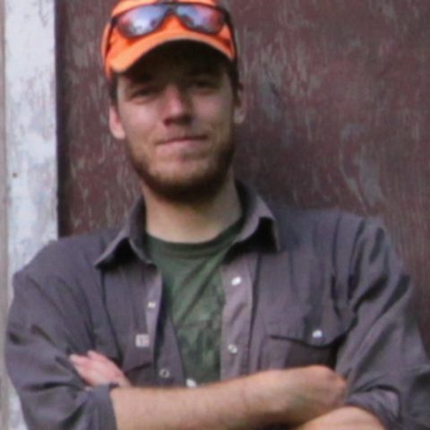
Visiting Ph.D. student from UBC Okanagan
M.Sc. students
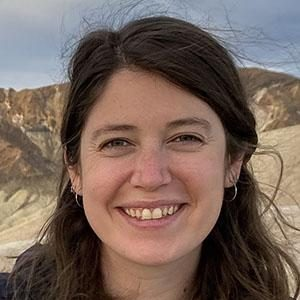
Carbonatite magmatism in Tanzania
Geochemistry of Granite Harbor Intrusives, Antarctica
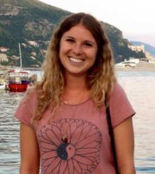
Geochronology of REE-bearing rocks in Colorado
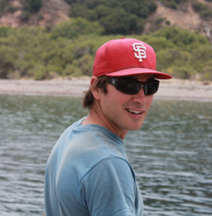
2015, Petrogenesis of the Mountain Pass Intrusive Suite
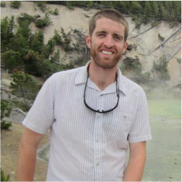
2014, Rare earth element mineralization in Joshua Tree National Park
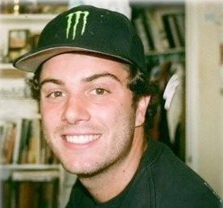
Bryan Norman
2013
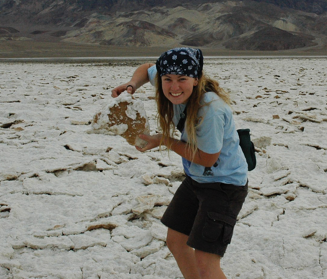
Amanda Willingham
2012, Time-scales of melt generation and migration in the Ama Drime Massif, Southern Tibet
Graduate lab assistants
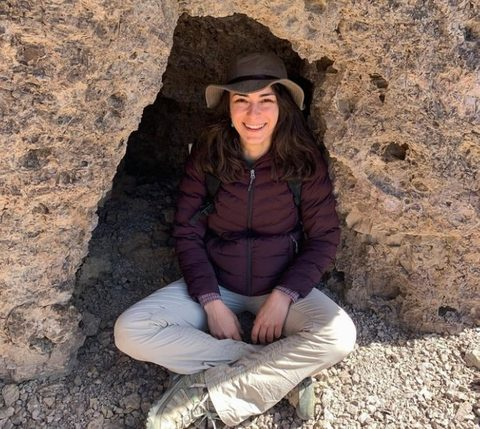
Isabella Welch
Graduate lab assistant
Caroline Newell
Graduate lab assistant
Undergraduate researchers and assistants

Austin Gessini
Undergraduate researcher

Sarah Kreitzer-Lillard
Undergraduate researcher

Adrianna Martinez
Undergraduate researcher

Marcus O'Connor
Undergraduate researcher
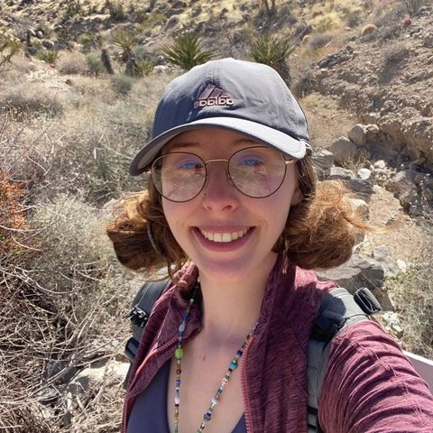
Sandy Schwarzbart
Undergraduate researcher
James Delehanty
Undergraduate researcher
Dylan Schroeder
Undergraduate researcher
Aliyah Sarna
Undergraduate researcher
Melia Ochoa
Undergraduate researcher
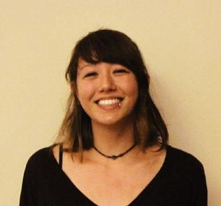
Layia Asakawa-Ekeland
Undergraduate researcher
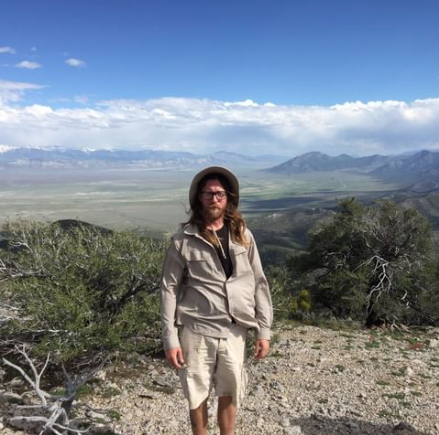
Ted Brown
Undergraduate researcher
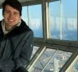
Aran Mazariegos
Undergraduate researcher
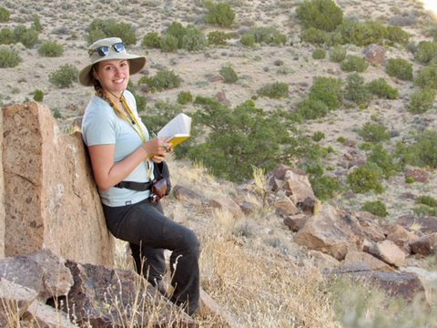
Nicole Aikin
Undergraduate researcher
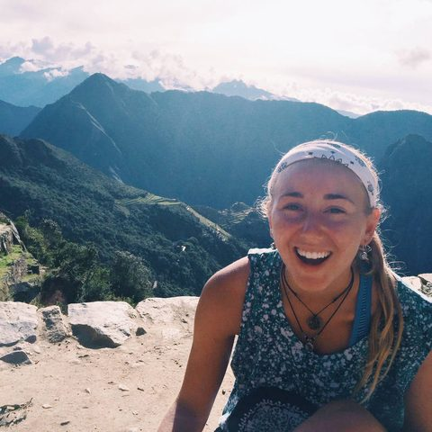
Erin Solloway
Undergraduate researcher
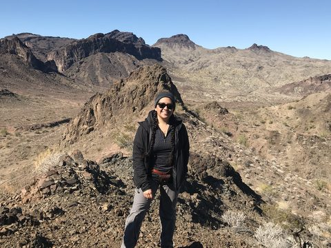
Valeria Jaramillo Hernandez
Undergraduate researcher
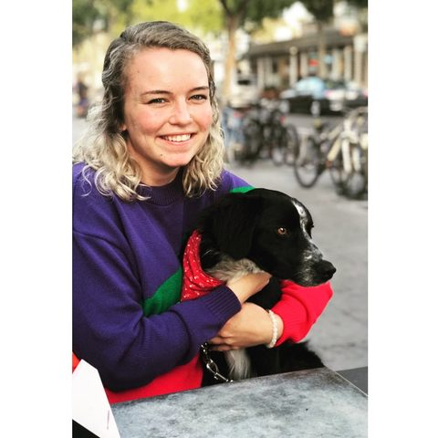
Sarah Grimes
Undergraduate researcher
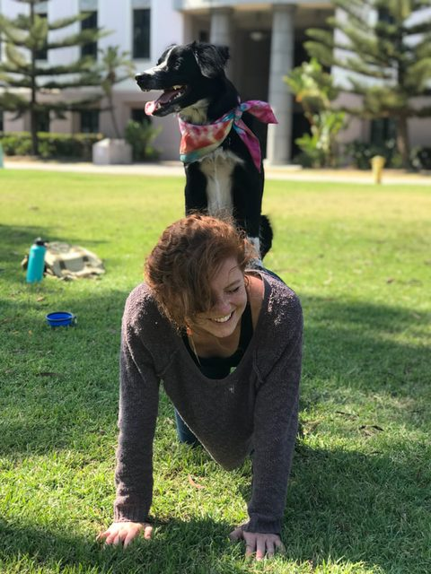
Riley Rohrer
Undergraduate researcher
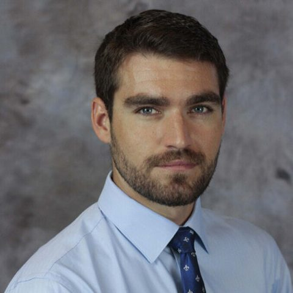
Josh Franck
Undergraduate researcher
Josh Hoeflich
Undergraduate researcher
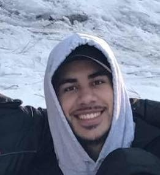
Daniel Torres
Undergraduate researcher
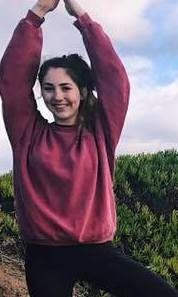
Kayla Leal
Undergraduate researcher
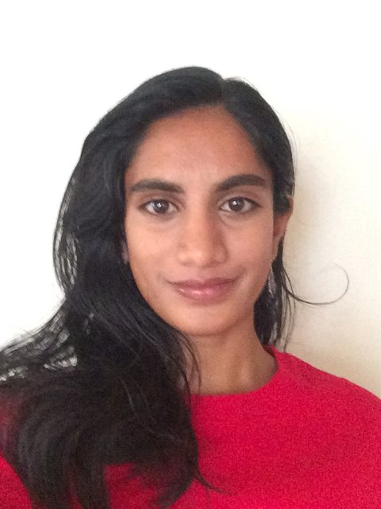
Charu Garapaty
Undergraduate researcher
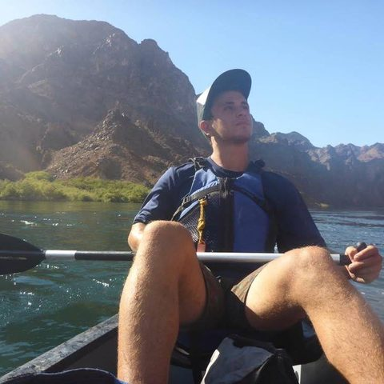
Adam Kershner
Undergraduate researcher
Bettie Coy
Undergraduate researcher
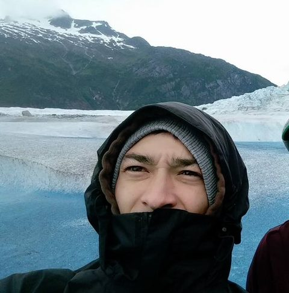
CJ Lemler
Undergraduate researcher
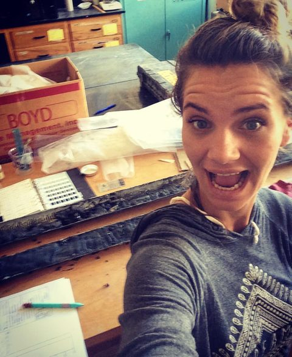
Elisa Medri
Undergraduate researcher
Gin Li
Undergraduate researcher
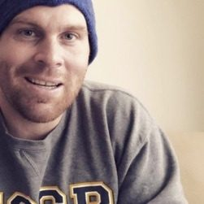
Chris Strong
Undergraduate researcher
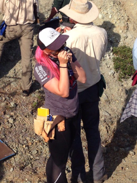
Nikki Arnush
Undergraduate researcher
Mason Gonzalez
Undergraduate researcher
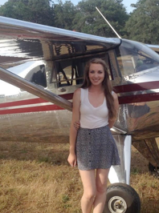
Michelle Carter
Undergraduate assistant
Haley Perry
Undergraduate assistant
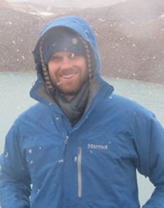
Keith Chancey
Undergraduate researcher
Michael Truong
Undergraduate assistant
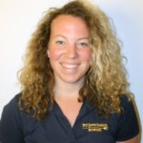
Elizabeth Spacone
Undergraduate researcher
Matthew Mazzoni
Undergraduate assistant
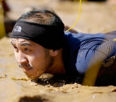
Tou Xiong
Undergraduate assistant
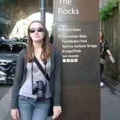
Paige Granneman
Undergraduate researcher
Nolan Blackford
Undergraduate researcher
Kyle Moulton
Undergraduate researcher
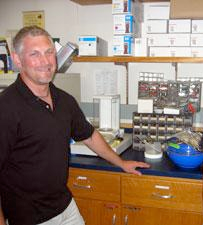
Jason Schmidt
Undergraduate researcher
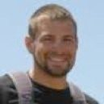
Justin LaForge
Undergraduate assistant
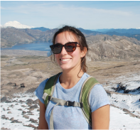
Camille Collett
Undergraduate assistant
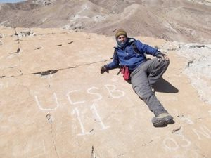
Robert Maksimow
Undergraduate researcher
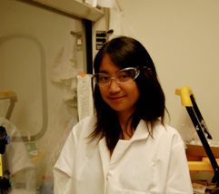
Christie Villanueva
Undergraduate researcher